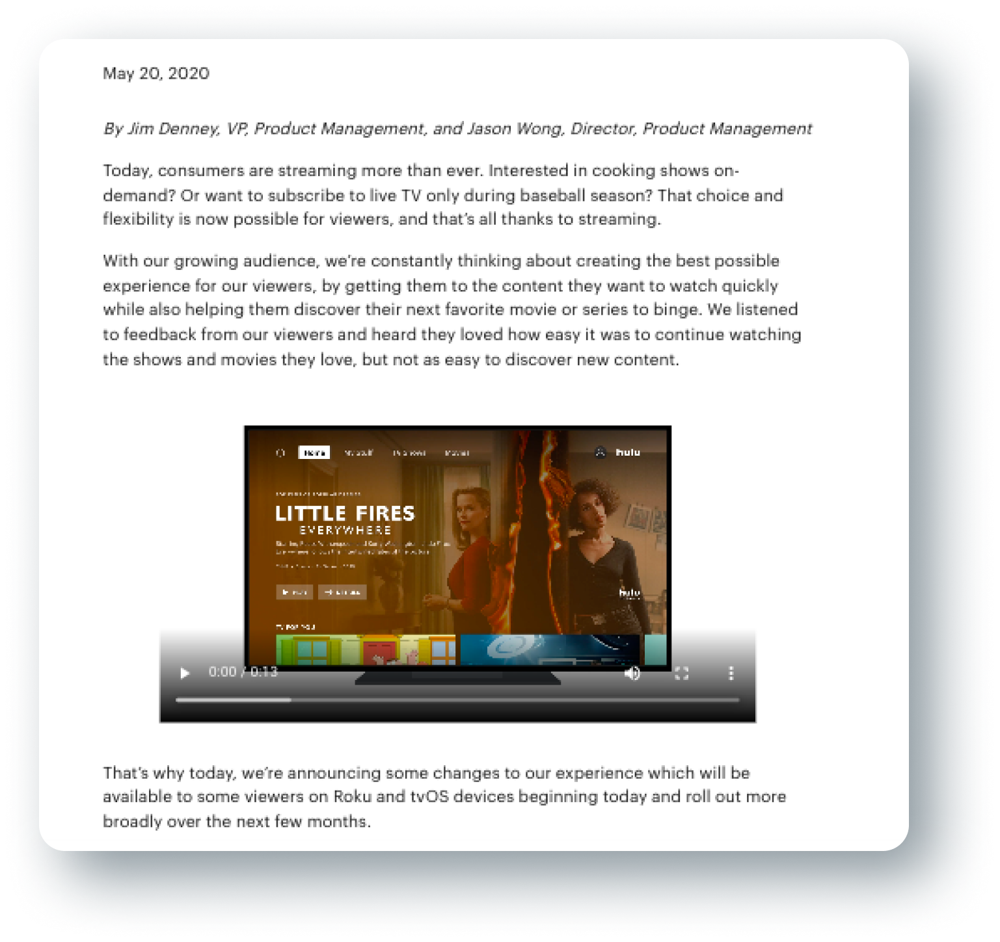

U I / U X
Hulu Browser Redesign
A redesign of Hulu's current interface with a focus on increasing engagement and discovery for users.
Role
- UI/UX
- Solo Project
Tools Used
- Adobe XD
- Adobe After Effects
- Adobe Photoshop
Duration
- 1 month
O V E R V I E W
Context
Hulu is a subscription video service that features television series, movies, and their own original content. They feature content from networks including ABC, Fox, and PBS and also stream movies from labels such as Lionsgate.
Hulu's 2020 Update Insight

During the early Summer of 2020, Jimmy Denney, VP of Product Management and Jason Wong, Director of Product Management, released a statement regarding their most recent redesign of Hulu in May and addressed the issues they considered in this update to improve the user’s experience.
They identified that creating the best experience for their users include:
1
Getting users the content they want to watch FAST
2
Helping users discover their next favorite movie or series to binge
They implemented these goals by:
1
Simplifying Navigation (similar to Disney’s interface)
2
Title Size Hierarchy to prioritize focus towards new content
3
Personalizing the Recommendation System further (through backend development)
The brief included that the interface also served to create a consistent experience across Disney streaming products, since Disney acquired full control over Hulu in 2019.
While these changes certainly improved aspects of the experience for a Hulu user, as a personal user myself, I felt that there existed opportunities to improve the browser interface further. I wanted to focus this project around the goals the project management team identified and challenge myself to make meaningful improvements that support them.
The Challenge
How can we redesign the existing interface to meet the expectations of the modern day streamer using the focuses identified by the Hulu team?
R E S E A R C H
User Surveys
According to a
study conducted by Julia Stoll, within the surveyors age groups, ages 18-29 had the highest percentage of users (41%) who currently have a Hulu subscription. With this in mind, I conducted research with individuals around this age and searched for relatively avid streamer users.
I created a google survey that included a screen record of the current home page of Hulu and asked questions regarding their investment in Hulu and what their thoughts are regarding the interface’s current state and potential changes that could reach unmet desires.
.png)
I D E A T I O N
Affinity Mapping
During the affinity mapping process, I identified three main groupings that the data belonged to: engagement, discovering, and interface. More importantly, I recognized that these categories and the ideas within them interconnect with each other. Therefore, targeting all three components in this redesign was essential to contribute meaningful and effective changes to the interface.

Key Findings
Most participants seem to use Hulu to watch specific shows, but have a hard time navigating through the interface. As a result, it is harder to find the shows they are interested in and discover new ones.
Interface Annotations
Hulu vs Netflix
(and other streaming services)
In my research, I discovered that users often brought up other existing services like Netflix while explaining what they believed was lacking in Hulu in terms of interface and their experience. Because Hulu is not the only streaming platform people use, it was important to consider what features of competitor’s services are valuable to users because it impacts their expectations when they come across similar services. There were two main features underdeveloped in Hulu: previews for shows/show’s information and filters. While these properties somewhat exist on the interface, they require a lot of “finding” on the user’s end with having to click through buttons in order to view information. This “work” makes the process of discovering new content bothersome. Likewise, the search feature, genre feature, and “more information” on shows required users to enter a process that was not as easy to exit out versus services that include preview features (like hovering for more information). This was important to consider as well since part of the expectation that comes with a user determining what show to watch is that the service will allow them to assess the available content in an efficient manner.
Design Goals

Initial Sketches
P R O T O T Y P E
01
Home Page

a.
Preview Feature
I addressed the engagement and discovering goals by implementing a preview feature that plays the trailer of a trending show/movie when the user visits the home page. This aims to introduce users to potentially relevant content they may be interested in without requiring any action on their end. By visually displaying the content, the interface is providing suggestions and direction for a user on what they are interested in watching.
b.
Hover Feature
To minimize the amount of clicking required for a user to access information about a show/movie, I added a hovering feature to allow users to accomplish multiple tasks when hovering their mouse over a show. When a user hovers over a show/movie listing, the show’s rating, release date, genre information, and description displays to the user. Additionally, the user can play the show/movie, add the show/movie to their saved list, and rate the show/movie up or down to help Hulu specialize what is relevant for the user.
02
Search/Filter Feature
Instead of having to filter through all content on Hulu through the main search bar, I created a search bar on the “TV Shows” tab and “Movies” tab. This is to simplify the process of finding/filtering content to allow users to find what they are looking for more efficiently.
a.
Search Feature Update
The redesigned search bar allows the user to exit out (instead of having to press on a different tab on the navigation menu to exit) and type directly in the location of the search icon. I also added a filter feature to allow users to sort through their search by specifying genres, rating, and length of content.
03
Trending
The “Trending” page is a new addition I added to create a designated space for all new, relevant, and popular content on Hulu. While these categories somewhat exist on the existing platform, having a separate tab eliminates the need to search through all of the rows to find potential content to watch.
b.
Updated Menu
To encourage discovery of new content, I added “Trending” as a tab on the navigation menu for maximum visibility for users. I also shifted the menu to the left for improved readability and reordered the items to flow more intuitively.
.png)
R E F L E C T I O N
This project was interesting to me because of how strong the correlation was between expectations formed from other streaming services (like Netflix) and complaints/difficulties found with Hulu - acknowledging what features were outdated in context to competitors turned out to be a beneficial strategy for finding solutions to similar problems that others may have already solved. I also learned that when dealing with interfaces that have many buttons and processes, having actions like hovering for a preview, are incredibly efficient solutions. Overall, I enjoyed working on this redesign! Over the course of months I have seen small changes roll out on the actual Hulu interface and I’m curious to see if any of the solutions I proposed are also thought of in the future.